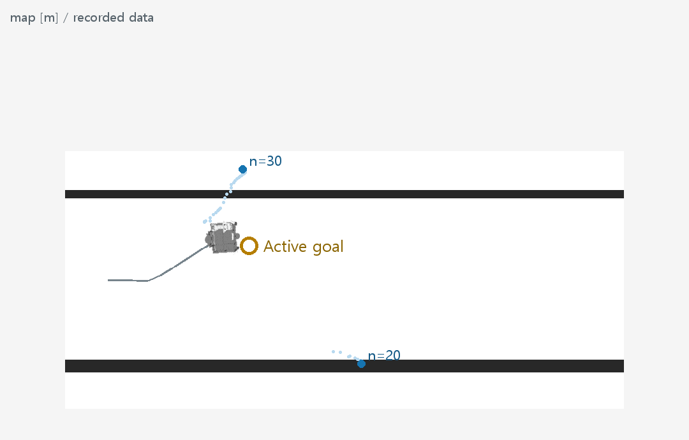
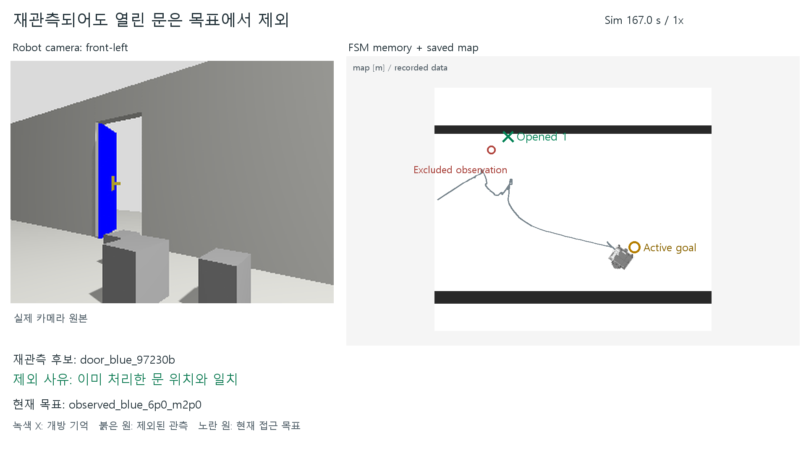
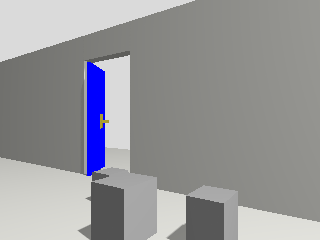
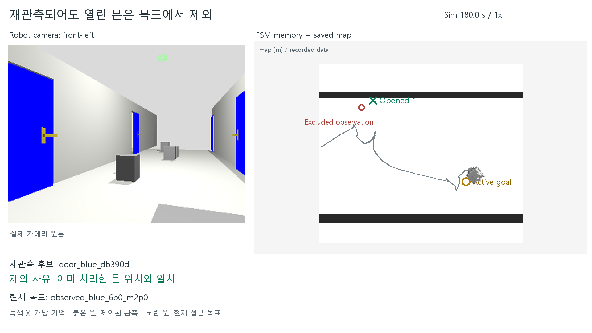
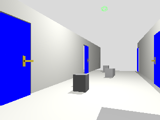
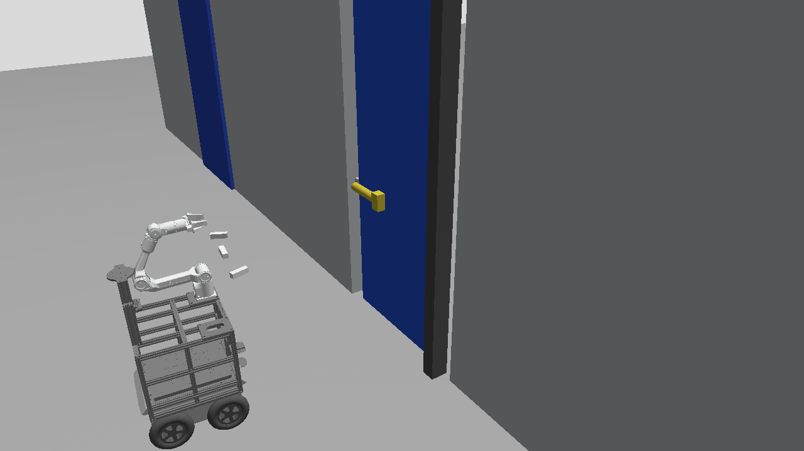

Asset finder / use full-resolution originals

Q2_map 관측 과정 2: 기억지도
2026-09-22 / MEMORY_R3
M1 열었던 문을 재관측해도 제외
2026-09-22 / MEMORY_R3
M1raw 열었던 문을 재관측해도 제외 / 카메라 원본
2026-09-22 / MEMORY_R3
M2 제외 후에도 다음 목표 유지
2026-09-22 / MEMORY_R3
M2raw 제외 후에도 다음 목표 유지 / 카메라 원본
2026-09-22 / MEMORY_R3
A1 근접 접근 과정 1/3
2026-09-22 / R34_SINGLE_DOOR